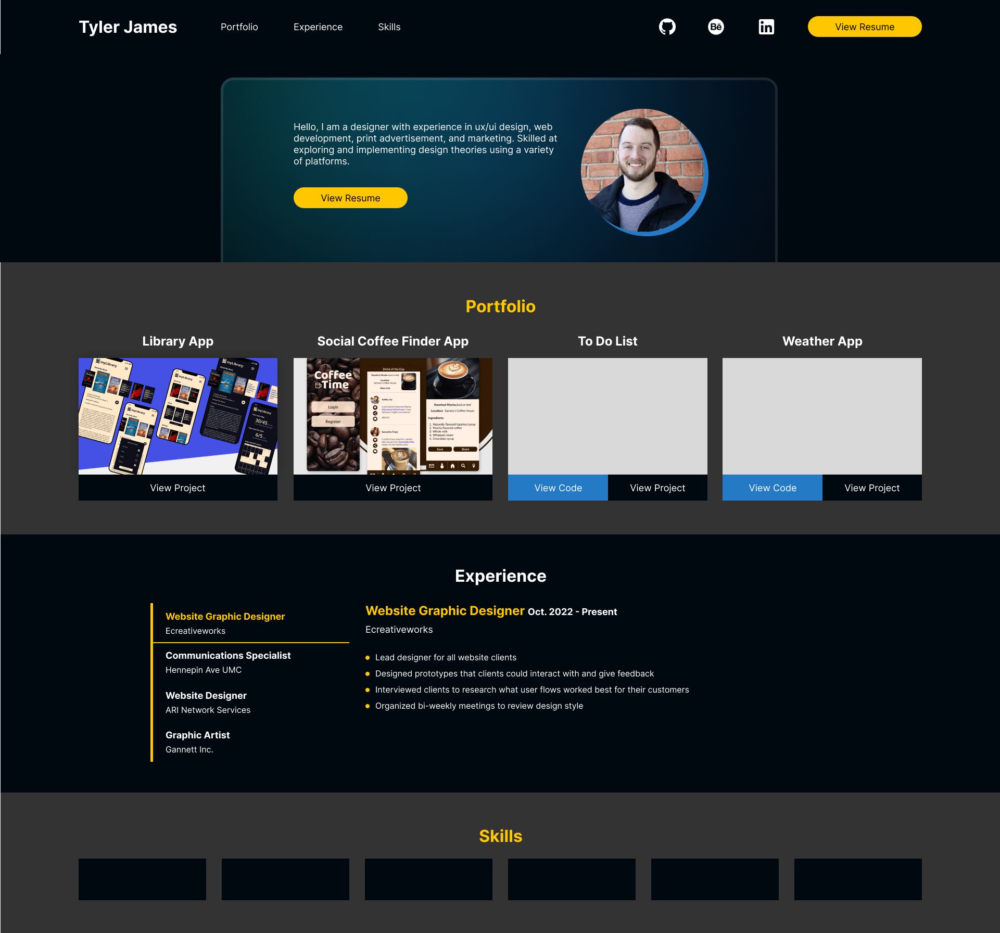

Project Overview
I expanded upon my previous portfolio design by making the design simpler to navigate and more modern. I began by designing this portfolio in Figma and then built it using HTML, CSS and Javascript. I bundled my code using Webpack.

Problem Statement
The problem with the first version of my portfolio was that users weren't able to find all of the information they needed for me.
Version One
The first version of my portfolio was a single page that led the user to other sites for more information. It was a bit busier and didn't utilize negative space as well either.

Conclusion
Overall I would say this redesign is much more modern and easier to navigate. The most significant difference is this is an all-in-one site. Users no longer need to go elsewhere to view my projects. I believe buttons and other focal points are highlighted better as well.